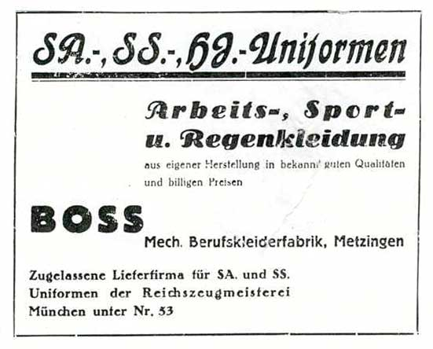

Hugo Boss AG, often styled as BOSS, is a fashion brand and fashion house headquartered in Metzingen, Baden-Württemberg, Germany. The company sells clothing, accessories, footwear, and fragrances. Hugo Boss is one of the largest German clothing companies,[3] with global sales of €2.9 billion in 2019.[4] Its stock is a component of the MDAX.[5]
The company was founded in 1924 by Hugo Boss and originally produced general-purpose clothing. With the onset of the Great Depression and the rise of Nazism in the early 1930s, Boss began to produce uniforms for the Nazi Party. Boss would eventually supply the Nazi Germany government with military uniforms, resulting in a large boost in sales.[6]
The company was founded in 1924 by Hugo Boss and originally produced general-purpose clothing. With the onset of the Great Depression and the rise of Nazism in the early 1930s, Boss began to produce uniforms for the Nazi Party. Boss would eventually supply the Nazi Germany government with military uniforms, resulting in a large boost in sales.[6]
After World War II and the founder's death in 1948, Hugo Boss started to turn its focus from uniforms to men's suits. The company went public in 1988 and introduced a fragrance line that same year, adding men's and women's wear diffusion lines in 1997, a full women's collection in 2000, and children's clothing in 2006–2007. The company has since evolved into a major global fashion house. As of 2018, it owned more than 1,113 retail stores worldwide.
History
Early years
In 1923, Hugo Boss founded his own clothing company in Metzingen, Germany, where it still operates.[8] In 1924, he started a factory along with two partners. The company produced shirts, jackets, work clothing, sportswear, and raincoats. Due to the economic climate of Germany at the time, Boss was forced into bankruptcy. In 1931, he reached an agreement with his creditors, leaving him with six sewing machines to start again.
Manufacturing for the Nazi Party
That same year, Hugo Boss became a member of the Nazi Party, receiving the membership number 508 889, and a sponsoring member ("Förderndes Mitglied") of the Schutzstaffel (SS).[citation needed] He also joined the German Labour Front in 1936, the Reich Air Protection Association in 1939, and the National Socialist People's Welfare in 1941.[citation needed] He was also a member of the Reichskriegerbund and the Reichsbund for physical exercises.[10] After joining these organizations, his sales increased from 38,260 ℛ︁ℳ︁ ($26,993 U.S. dollars in 1932) to over 3,300,000 ℛ︁ℳ︁ in 1941.[10] Though he claimed in a 1934–35 advertisement that he had been a "supplier for National Socialist uniforms since 1924", it is probable that he did not begin to supply them until 1928 at the earliest.[10] This is the year he became a Reichszeugmeisterei-licensed supplier of uniforms to the Sturmabteilung (SA), Schutzstaffel (SS), Wehrmacht, Hitler Youth, National Socialist Motor Corps, and other party organizations.[11][12]
By the third quarter of 1932, the all-black SS uniform was designed by SS members Karl Diebitsch (artist) and Walter Heck (graphic designer). The Hugo Boss company was one of the companies that produced these black uniforms for the SS. By 1938, the firm was focused on producing Wehrmacht uniforms and later also uniforms for the Waffen-SS.[13]
During the Second World War, Hugo Boss employed 140 forced laborers, the majority of them women. In addition to these workers, 40 French prisoners of war also worked for the company briefly between October 1940 – April 1941. According to German historian Henning Kober, the company managers were fervent Nazis who were all great admirers of Adolf Hitler. In 1945, Hugo Boss had a photograph in his apartment of him with Hitler, taken at the Berghof, Hitler's Obersalzberg retreat.
Because of his early Nazi Party membership, his financial support of the SS, and the uniforms delivered to the Nazi party, Boss was considered both an "activist" and a "supporter and beneficiary of National Socialism". In a 1946 judgment, he was stripped of his voting rights, his capacity to run a business, and fined "a very heavy penalty" of 100,000 ℛ︁ℳ︁ ($70,553 U.S.) (£54,008 stg).[10] However, Boss appealed, and he was eventually classified as a ‘follower’, a lesser category, which meant that he was not regarded as an active promoter of National Socialism.
He died in 1948, but his business survived. In 2011, the company issued a statement of "profound regret to those who suffered harm or hardship at the factory run by Hugo Boss under National Socialist rule".
Post-war
As a result of the ban on Boss being in business, his son-in-law Eugen Holy took over ownership and running of the company. In 1950, after a period supplying work uniforms, the company received its first order for men's suits, resulting in an expansion to 150 employees by the end of the year. By 1960, the company was producing ready-made suits. In 1969, Eugen retired, leaving the company to his sons Jochen and Uwe, who began international development. In 1970, the first Boss branded suits were produced, with the brand becoming a registered trademark in 1977. This was followed by the start of the company's long association with motorsport, sponsoring Formula One driver Niki Lauda, and later the McLaren Racing team.
In 1984, the first Boss branded fragrance appeared. This helped the company gain the required growth for listing on the Frankfurt Stock Exchange the following year. The brand began sponsorship of golf with Bernhard Langer in 1986 and tennis with the Davis Cup in 1987. In 1989, Boss launched its first licensed sunglasses. Later that year, the company was bought by a Japanese group.
After the Marzotto textile group acquired a 77.5% stake for $165,000,000 in 1991,[16][17] the Hugo and Baldessarini brands were introduced in 1993. In 1995, the company launched its footwear range, the first in a now fully developed leather products range across all sub-brands. A partnership with the Solomon R. Guggenheim Foundation was launched in 1995, resulting in the Hugo Boss Prize, an annual $100,000 stipend in modern arts presented since 1996.
Recent history
In 2005, Marzotto spun off its fashion brands into the Valentino Fashion Group, which was then sold to Permira private equity group.[citation needed] In March 2015, Permira announced plans to sell the remaining shareholding of 12%. Since the Exit by Permira, 91% of the shares floated on the Börse Frankfurt, and the residual 2% was held by the company. 7% of the shares are owned by the Marzotto family.[citation needed] Hugo Boss has at least 6,102 points of sale in 124 countries. Hugo Boss AG directly owns over 364 shops, 537 mono-brand shops, and over 1,000 franchisee-owned shops.
In 2009, BOSS Hugo Boss was by far the largest segment, consisting of 68% of all sales. The remainder of sales were made up by Boss Orange at 17%, BOSS Selection at 3%, Boss Green at 3% and HUGO at 9%.
In 2010, the company had sales of $2,345,850,000 and a net profit of $262,183,000,[16] with royalties of 42% of total net profit.[16] In June 2013, Jason Wu was named artistic director of Boss Womenswear.
In 2017, the sales of Hugo Boss climbed by 7 percent during the final quarter of the year.